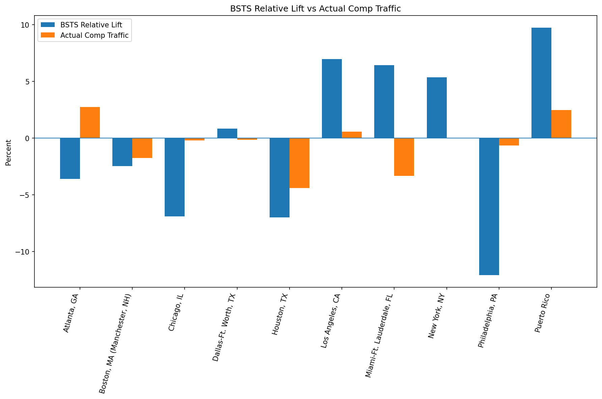
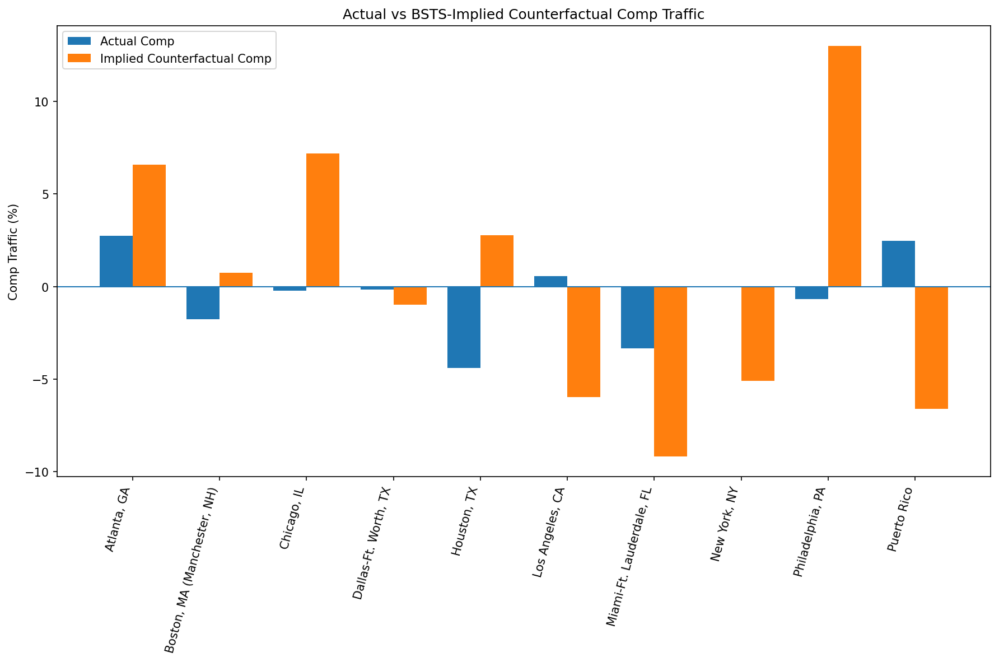
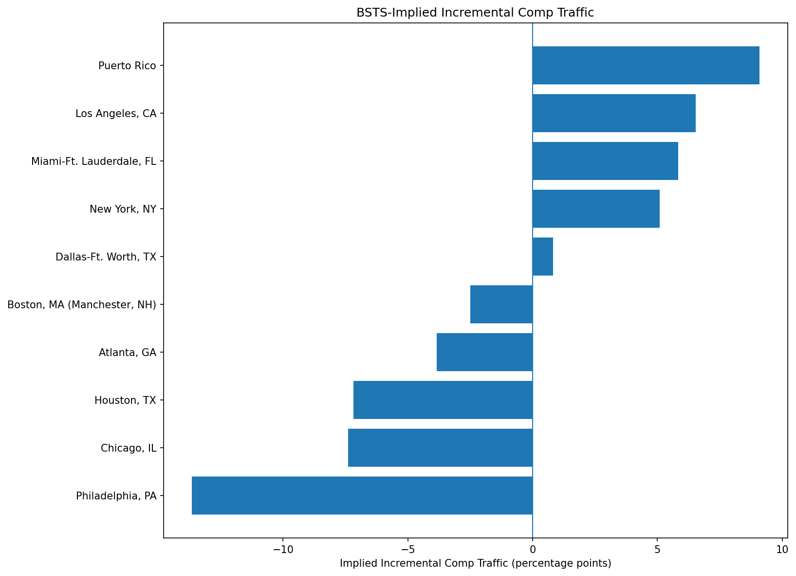

Across the production-valid DMAs, the BSTS model estimated an average relative traffic lift of -0.28%. Actual comp performance averaged -0.48%, while the BSTS-implied counterfactual comp averaged 0.24%. The resulting theoretical incremental comp contribution averaged -0.72%.
2 DMAs were classified as Positive Impact, 3 as Mitigated Decline, 1 as Offsetting Drag, and 4 as Negative Impact. This distribution highlights substantial DMA-level heterogeneity in the estimated intervention response.
The BSTS model estimates the incremental traffic associated with the intervention by comparing observed traffic with a modeled counterfactual.
The comp-traffic dataset measures year-over-year traffic performance among stores currently classified as comp stores. Because the BSTS traffic population and comp-store population are not identical, the two measures should not be directly divided against one another.
Instead, the BSTS relative lift is used to construct a theoretical comp counterfactual.
This is a translation of the BSTS result into comp-traffic terms. It is not a separate causal model of comp traffic and should not be interpreted as an independent causal estimate.
| DMA | Comp Months | BSTS Incremental Traffic | BSTS Lift | Probability Positive | Actual Comp | Implied Counterfactual Comp | Implied Incremental Comp | Impact Classification | Interpretation |
|---|---|---|---|---|---|---|---|---|---|
| Atlanta, GA | 7 | -184,005 | -3.61% | 27.01% | 2.75% | 6.59% | -3.85% | Offsetting Drag | Observed comp traffic remained positive, but the BSTS counterfactual implies performance could have been stronger without the intervention. |
| Boston, MA (Manchester, NH) | 7 | -115,123 | -2.48% | 33.77% | -1.76% | 0.74% | -2.50% | Negative Impact | Negative BSTS-estimated intervention effect accompanied by negative observed comp traffic. |
| Chicago, IL | 7 | -597,897 | -6.91% | 18.34% | -0.22% | 7.18% | -7.40% | Negative Impact | Negative BSTS-estimated intervention effect accompanied by negative observed comp traffic. |
| Dallas-Ft. Worth, TX | 7 | 32,590 | 0.83% | 53.30% | -0.16% | -0.99% | 0.82% | Mitigated Decline | Observed comp traffic declined, but the BSTS counterfactual implies the decline may have been larger without the intervention. |
| Houston, TX | 7 | -532,486 | -6.99% | 12.12% | -4.41% | 2.78% | -7.19% | Negative Impact | Negative BSTS-estimated intervention effect accompanied by negative observed comp traffic. |
| Los Angeles, CA | 7 | 664,230 | 6.96% | 91.94% | 0.57% | -5.97% | 6.54% | Positive Impact | Positive BSTS-estimated intervention effect with positive observed comp traffic. |
| Miami-Ft. Lauderdale, FL | 4 | 251,764 | 6.43% | 83.45% | -3.33% | -9.17% | 5.84% | Mitigated Decline | Observed comp traffic declined, but the BSTS counterfactual implies the decline may have been larger without the intervention. |
| New York, NY | 7 | 963,299 | 5.35% | 81.39% | -0.01% | -5.09% | 5.08% | Mitigated Decline | Observed comp traffic declined, but the BSTS counterfactual implies the decline may have been larger without the intervention. |
| Philadelphia, PA | 7 | -698,524 | -12.08% | 2.10% | -0.66% | 12.99% | -13.65% | Negative Impact | Negative BSTS-estimated intervention effect accompanied by negative observed comp traffic. |
| Puerto Rico | 4 | 463,815 | 9.72% | 91.79% | 2.46% | -6.61% | 9.08% | Positive Impact | Positive BSTS-estimated intervention effect with positive observed comp traffic. |
This comparison shows whether DMAs with positive or negative BSTS-estimated intervention effects also exhibited positive or negative year-over-year comp performance.

The implied counterfactual represents the theoretical comp performance after removing the BSTS-estimated intervention lift from the observed comp result.

This represents the theoretical percentage-point contribution of the intervention to comp traffic under the translation assumption described above.

The BSTS model is the causal framework used to estimate incremental traffic. The comp calculation provides an additional business interpretation of that result.
In particular, the translation assumes that the relative BSTS intervention lift can be applied proportionally to the observed comp traffic rate. This assumption allows us to express the BSTS result in familiar comp-traffic terms, but it does not prove that the intervention independently caused the calculated comp percentage-point change.
The BSTS / comp comparison indicates that response to the
marketing intervention varied materially across DMAs.
The four classifications distinguish observed year-over-year
comp performance from the modeled intervention-associated
traffic effect.
Positive Impact markets exhibited both a
positive BSTS-estimated intervention effect and positive
observed comp traffic. These represent the most consistently
favorable results.
Mitigated Decline markets experienced negative
observed comp traffic, but the BSTS counterfactual suggests
performance could have been weaker without the intervention.
The intervention therefore appears to have partially offset
underlying traffic pressure.
Offsetting Drag markets retained positive
observed comp traffic, but the BSTS estimate indicates that
performance may have been stronger absent the intervention.
These markets warrant closer investigation because positive
headline comp performance may mask an unfavorable modeled
intervention effect.
Negative Impact markets exhibited both negative
observed comp traffic and a negative BSTS-estimated intervention
effect. These markets provide the clearest unfavorable signal
within the comparison framework.
Management Interpretation